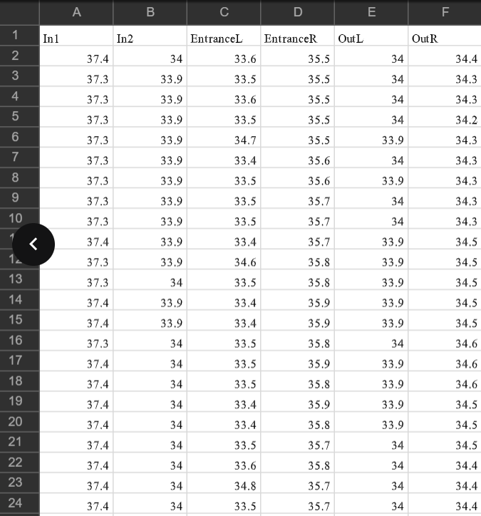
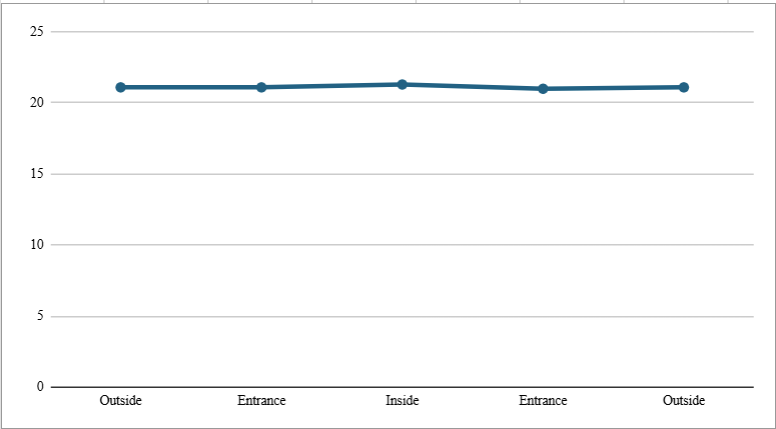

# useless box
# ---------------------------------
we finished the useless box this week, and it was really fun to see it working after all the work we had done over the weeks in assembling it!

/week 6
# useless box
# ---------------------------------
we finished the useless box this week, and it was really fun to see it working after all the work we had done over the weeks in assembling it!
# sensor
# ---------------------------------
i improved my circuit for my final project that i worked on in week 4, which includes schematics of the sensor circuit. i included code to switch the heater's relay on, only when the average readings of the two sensors inside the cooler fell below 21C. i also integrated the C++ class structure we learnt in class instead of using the delay function. this is a snippet of the updates from week 4:
static float t1 = NAN, t6 = NAN; // store latest t1/t6 for heater logic
if (now - lastSensorRead >= sensorInterval) {
lastSensorRead = now;
float h1 = dht1.readHumidity();
float t1 = dht1.readTemperature();
printSensorData("Sensor1", t1, h1);
printSensorData("Sensor2", dht2.readTemperature(), dht2.readHumidity());
printSensorData("Sensor3", dht3.readTemperature(), dht3.readHumidity());
printSensorData("Sensor4", dht4.readTemperature(), dht4.readHumidity());
printSensorData("Sensor5", dht5.readTemperature(), dht5.readHumidity());
float h6 = dht6.readHumidity();
float t6 = dht6.readTemperature();
printSensorData("Sensor6", t6, h6);
Serial.println("--------------------");
// Heater control
if (!isnan(t1) && !isnan(t6)) {
float avgTemp = (t1 + t6) / 2.0;
if (avgTemp < setTemp && !heaterOn) {
heaterOn = true;
digitalWrite(relayPin4, HIGH); // turn heater ON
Serial.println("Heater ON");
} else if (avgTemp > setTemp && heaterOn) {
heaterOn = false;
digitalWrite(relayPin4, LOW); // turn heater OFF
Serial.println("Heater OFF");
}
} else {
Serial.println("Failed to read sensors 1 or 6: Heater unchanged");
}
}
}
i found out about microsoft excel's data-streamer add-on, which i used to log my data, and then create graphs. below is a snippet of the temperature data i collected, and a graph i created on excel using that data. the temperature is pretty linear throughout the model, because it is in a room-temperature room, which makes sense.

